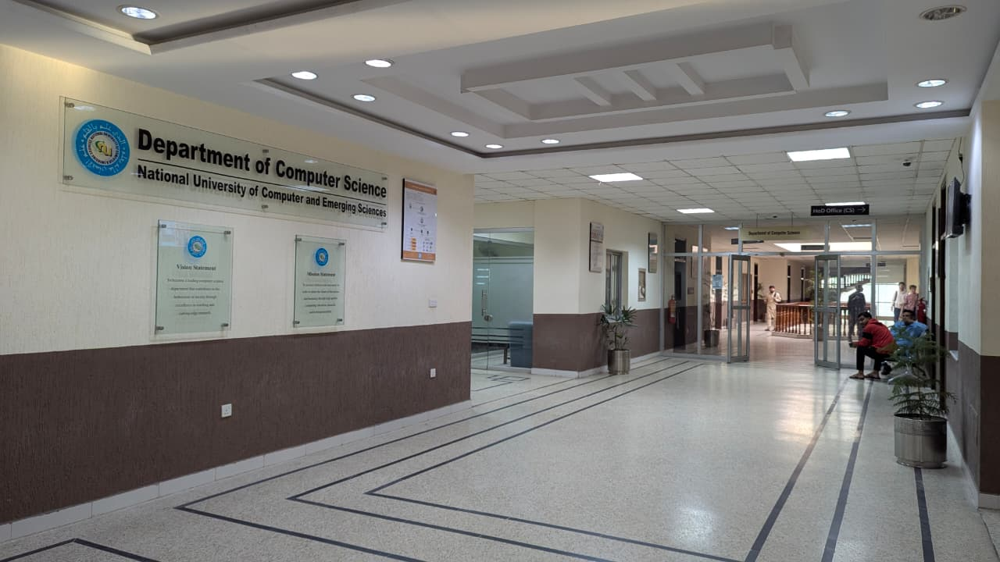
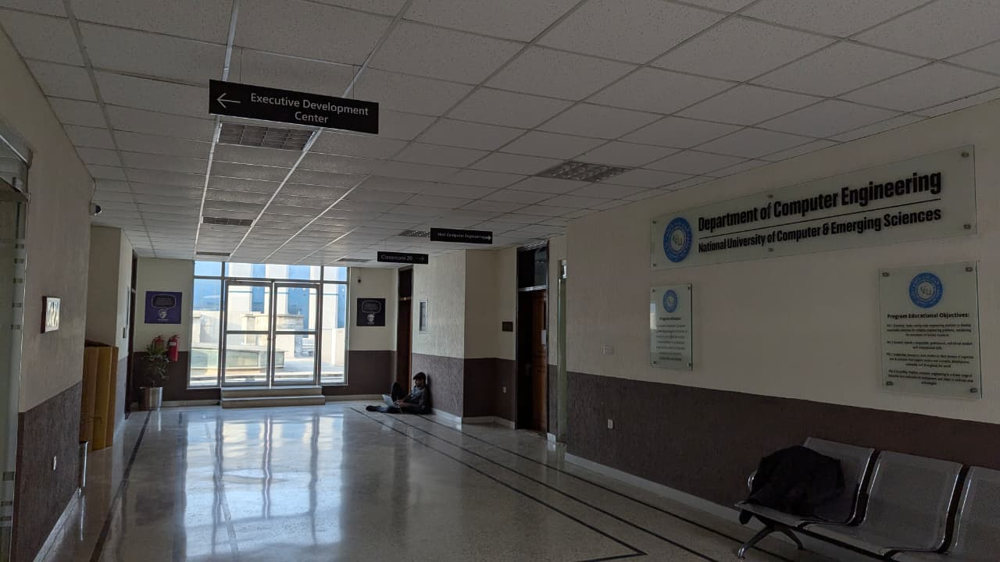
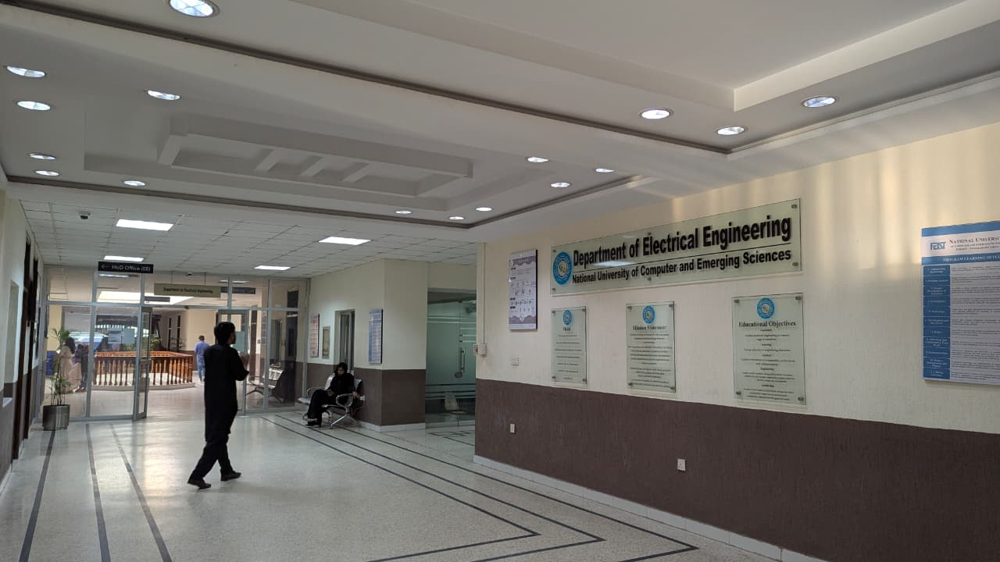

Academic Departments
At FAST CFD Campus, we offer a range of departments combining theoretical knowledge
with hands-on practical experience. Our departments are equipped with state-of-the-art labs,
highly qualified faculty, and modern learning tools to prepare students for the challenges of the tech industry.
Students in each department are encouraged to participate in research projects, innovation competitions,
and collaborative workshops. Our mission is to produce highly skilled graduates ready for both industry and academia.
Computer Science

The Computer Science department focuses on programming, artificial intelligence,
software engineering, machine learning, data science, and cybersecurity.
Students gain proficiency in multiple programming languages and modern software tools.
Our lab facilities include AI labs, cloud computing platforms, and coding hubs
where students work on real-world projects. Graduates often excel in software development,
research, and technology entrepreneurship.
Computer Engineering

The Computer Engineering department bridges the gap between electrical engineering and computer science.
Students learn about embedded systems, computer architecture, networking, and hardware-software integration.
Practical workshops allow students to design microcontrollers, circuit boards, and IoT devices.
Our graduates are highly sought after in industries focusing on robotics, hardware development, and intelligent systems.
Electrical Engineering

The Electrical Engineering department emphasizes circuits, electronics, communication systems,
renewable energy, and power engineering. Students are trained on both theoretical concepts and practical lab work.
Our department encourages innovation in energy-efficient solutions, smart grids, and embedded electronics.
Graduates often pursue careers in power systems, telecommunications, and advanced electronics research.
Why Choose FAST CFD Departments?
- Modern labs and workshops with industry-standard equipment.
- Hands-on research and project-based learning.
- Collaboration opportunities with tech companies and startups.
- Experienced faculty with expertise in multiple research areas.
- Access to conferences, seminars, and global tech competitions.